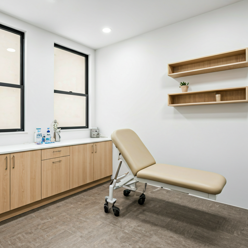

Exámenes de Bienestar
Evaluaciones físicas integrales y detecciones preventivas para asegurar una vitalidad duradera.
Donde la precisión médica se encuentra con un trato amable. Ofrecemos un espectro completo de especialidades veterinarias.
Evaluaciones físicas integrales y detecciones preventivas para asegurar una vitalidad duradera.
Procedimientos avanzados realizados en un entorno estéril con los más altos estándares de anestesia.
Protocolos de inmunización personalizados según el estilo de vida y entorno de tu mascota.
Limpiezas profesionales y cuidado periodontal para prevenir enfermedades sistémicas.
Servicio de farmacia propio con medicamentos verificados y planes de nutrición terapéutica.
Laboratorio de resultados rápidos e imágenes digitales para obtener respuestas inmediatas.
Nuestro equipo de especialistas certificados está disponible para diagnósticos avanzados que requieren un alto nivel de experiencia técnica.
